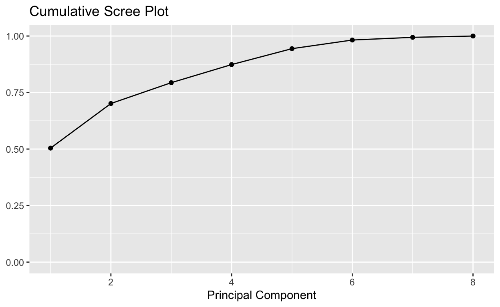

Motivation
Lets consider this dataset, it has highly correlated variables. We would like to understand the relationship between variables or relationship with response and variables
Eigen Values and Vectors
## ── Attaching core tidyverse packages ──────────────────────── tidyverse 2.0.0 ──
## ✔ dplyr 1.1.4 ✔ readr 2.1.5
## ✔ forcats 1.0.0 ✔ stringr 1.5.1
## ✔ ggplot2 3.5.1 ✔ tibble 3.2.1
## ✔ lubridate 1.9.3 ✔ tidyr 1.3.1
## ✔ purrr 1.0.2
## ── Conflicts ────────────────────────────────────────── tidyverse_conflicts() ──
## ✖ dplyr::filter() masks stats::filter()
## ✖ dplyr::lag() masks stats::lag()
## ✖ dplyr::recode() masks car::recode()
## ✖ purrr::some() masks car::some()
## ℹ Use the conflicted package (<http://conflicted.r-lib.org/>) to force all conflicts to become errors## DriversKilled drivers front rear kms PetrolPrice VanKilled law
## [1,] 107 1687 867 269 9059 0.1029718 12 0
## [2,] 97 1508 825 265 7685 0.1023630 6 0corMat = cor(indata)Eigenvalues
Determining Principal Components
There is no universal objective way to determine the number of principal components, typically it is subjected aided by one of the following: 1. the amount of total sample variance explained 2. relative sizes of eigen values 3. subject-matter interpretations 4. point of bend in the scree plot
PVE <- eigenRes$values / sum(eigenRes$values)
# Percent variance explained
PVE[1] 0.504203628 0.197269118 0.092150711 0.080077019 0.070366823 0.038211278
[7] 0.011946666 0.005774756#Cumulative percent variance explained
cumsum(PVE)[1] 0.5042036 0.7014727 0.7936235 0.8737005 0.9440673 0.9822786 0.9942252
[8] 1.0000000Scree Plot
* Plot of magnitude of the eigen value on the y-axis versus its index on the x-axis.
* Look for an elbow (or a bend) in the scree plot.
* The elbow occurs at 3 and since the first three components explain 87% of the sample variance.
# PVE (aka scree) plot
corMat = cor(indata)
eigenRes = eigen(corMat)
PVE <- eigenRes$values / sum(eigenRes$values)
PVEplot <- qplot(c(1:length(PVE)), PVE) +
geom_line() +
xlab("Principal Component") +
ylab("PVE") +
ggtitle("Scree Plot") +
ylim(0, 1)Warning: `qplot()` was deprecated in ggplot2 3.4.0.
This warning is displayed once every 8 hours.
Call `lifecycle::last_lifecycle_warnings()` to see where this warning was
generated.PVEplot# Cumulative PVE plot
cumPVE <- qplot(c(1:length(PVE)), cumsum(PVE)) +
geom_line() +
xlab("Principal Component") +
ylab(NULL) +
ggtitle("Cumulative Scree Plot") +
ylim(0,1)
cumPVE
#grid.arrange(PVEplot, cumPVE, ncol = 2)Interpreting Loadings
#plot number of eigen values that need to be selected
evecs = eigenRes$vectors[,1:3]
colnames(evecs) = c("e1", "e2", "e3")
row.names(evecs) = colnames(indata)
evecs e1 e2 e3
DriversKilled -0.4080022 -0.17871091 -0.25491038
drivers -0.4501636 -0.10462795 -0.18642612
front -0.4529427 -0.22338322 0.12423577
rear -0.1833141 -0.68358056 0.04508572
kms 0.2878262 -0.55389084 0.12112979
PetrolPrice 0.3171550 -0.09538963 -0.72129718
VanKilled -0.3240129 0.18802266 -0.51075334
law 0.3220408 -0.29780228 -0.29493683| e1 | e2 | e3 | |
|---|---|---|---|
| DriversKilled | -0.4080022 | -0.1787109 | -0.2549104 |
| drivers | -0.4501636 | -0.1046280 | -0.1864261 |
| front | -0.4529427 | -0.2233832 | 0.1242358 |
| rear | -0.1833141 | -0.6835806 | 0.0450857 |
| kms | 0.2878262 | -0.5538908 | 0.1211298 |
| PetrolPrice | 0.3171550 | -0.0953896 | -0.7212972 |
| VanKilled | -0.3240129 | 0.1880227 | -0.5107533 |
| law | 0.3220408 | -0.2978023 | -0.2949368 |
Interpretation: The first component is roughly equally weighted sum of the five stocks. This can be the general market component.
The second component represents a contrast between bank stocks {JPM, Citibank, WellFargo} and the oil stocks {Royal Dutch, Exxon}. This can be interpreted as industry component.
Principal Components Score
The sample principal components are defined as those linear combinations which have maximum sample variance. If we project the 103 data points onto the first eigen vectors , the projected values are called the first principal component
Visualize
Plot two principal components